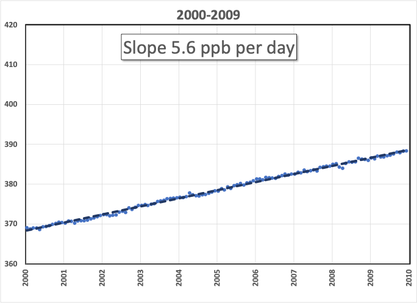
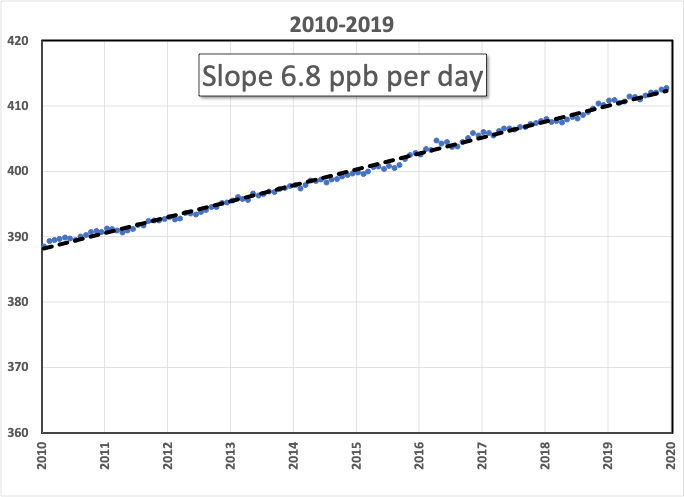

After hitting “publish” on the last installment, it occurred to me that I was publicly contradicting a significant conclusion of an international group of prominent scientists and opinion leaders, many of whom had spent long hours preparing the report. Because my conclusions were developed over the course of a week without “peer review”, they may be dismissed as superficial.
But here’s the deal: The IPCC has become buried in the details of models and data. It has also become entrenched over decades, gaining self-satisfaction in its role as the Oracle of Science regarding impending climate changes. The top conclusion reported was, essentially, “What we’ve been doing so far is working, we’re making a tiny difference over decades!”
I call “Bullshit.”
The only greenhouse gas that really matters is carbon dioxide. The other gases may contribute to “global warming potential”, but without controlling CO2, they won’t matter. It’s politically useful to include them because they’re easier to control, less tied to economic productivity, and consequently easier to agree on. But it doesn’t make scientific sense. Here’s the truth—From 2000 to 2009, the CO2 in our atmosphere increased by an average of 5.6 parts per billion per day.

From 2010 to 2019, the CO2 in our atmosphere increased by an average of 6.8 parts per billion per day, in other words, 20% faster. It doesn’t matter whether that’s caused by increased emissions from China or the contribution of “land use, land-use change, and forestry”! The consequences are identical.

That’s the problem we need to address, and we need to act now.
If you’re new to this rag, please start at the beginning1, or at least pick a few earlier installments to chew on. If you want a quick take on a plausible solution, check out this YouTube video.